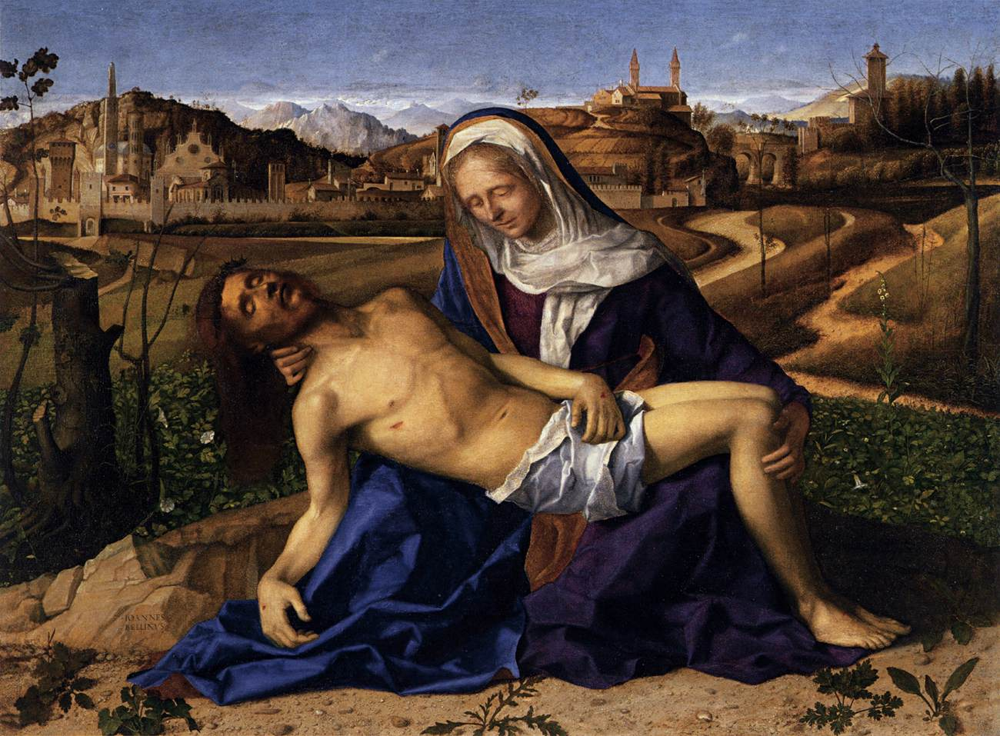

Saturday, February the 14th, 2015
back to: title, date or indexes

I ought to have posted a Pietà yesterday, but events of the past few days have led me to leave Hooting Yard untended. First there was an eye test involving blurring-effect droppages, then a three-hour marathon radio broadcast as part of the ResonanceFM fundraiser week, and certain other matters which I may go into at a later date. Onwards and upwards!